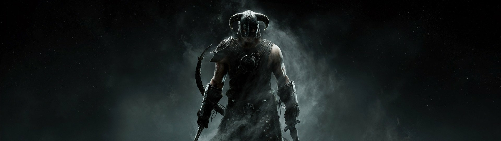
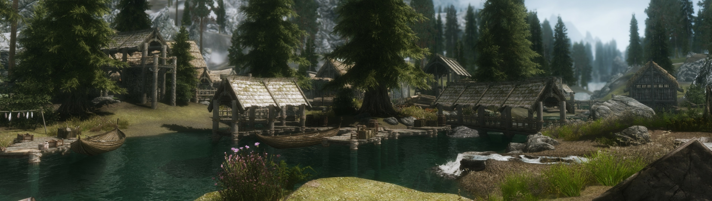

No cabe duda de que The Elder Scrolls V: Skyrim ha hecho historia a lo largo de estos 10 años de vida, consolidándose como uno de los mejores y más influyentes videojuegos de rol fantástico en mundo abierto. Es por eso que Bethesda no ceja en su empeño de continuar actualizándolo en momentos especiales, y este décimo aniversario sin duda era una ocasión que lo merecía: este cumpleaños ha coincidido con la llegada de la nueva generación de consolas, lo que ha propiciado el lanzamiento de una Anniversary Edition que además de recopilar todo el contenido del Creation Club también ofrecen mejoras next-gen en PS5 y Xbox Series X/S.
Más allá de que ver Skyrim reeditado cada pocos años se haya convertido en un meme, lo cierto es que la política de Bethesda es digna de alabar: con estas actualizaciones mantiene vivo un juego que la comunidad sigue jugando y mejorando constantemente, y lo hace con una política de venta relativamente considerada con los fans: es cierto que la nueva edición vuelve a ser de pago (54,99 € en España), pero quienes ya tengan el juego pueden actualizar desde The Elder Scrolls V: Skyrim Special Edition a un precio reducido de 19,99 € que da acceso a todo el contenido del Creation Club. Y aun así, quienes no decidan actualizar, todavía recibirán gratuitamente cuatro nuevos añadidos y las mencionadas mejoras gráficas y de rendimiento en consolas de nueva generación.
Lo que nos vamos a encontrar aquí es el mismo Skyrim de la Special Edition, pero mejorado levemente a nivel gráfico y en el rendimiento (sobre todo en el framerate y en los tiempos de carga), y con añadidos que le dan más profundidad y variedad a la experiencia. En este análisis nos centraremos en esos dos aspectos.
La principal novedad de The Elder Scrolls V: Skyrim Anniversary Edition es que incluye más de 500 elementos del Creation Club, una cifra realmente sorprendente pero que en realidad no es tan inabarcable como suena: en ese número entran cada una de las piezas que componen 82 packs de creaciones entre los que se incluyen desde largas cadenas de misiones secundarias con ítems y personajes propios hasta diseños alternativos para armaduras o modificaciones de la jugabilidad. Hay creaciones de todo tipo, pero todas coinciden en que han sido desarrolladas de manera colaborativa entre Bethesda y la comunidad de modders; si hubiera que escoger entre definirlas como expansiones o como mods, lo primero sería mucho más acertado: están integradas en el juego de forma orgánica, respetan el lore y la inmersión, tienen unos altos valores de producción y, sobre todo, llegan localizadas a varios idiomas (entre los que se encuentra el español) tanto en textos como en voces.
Estos añadidos ya estaban disponibles para los poseedores de The Elder Scrolls V: Skyrim Special Edition que quisieran comprarlos a través del Creation Club, una plataforma en la que se podían adquirir a través de créditos (una moneda virtual) tanto en packs como por separado. La Anniversary Edition no sólo nos da acceso libre a todas las creaciones publicadas hasta ahora (si se lanzan nuevas habrá que comprarlas) sino que se ha realizado un trabajo de integración en el juego. De esta manera, si activamos el add on de zombis no sólo desbloquearemos la misión asociada a su alzamiento, sino que también veremos nuevos modelos de no muertos cuando luchemos contra un nigromante en uno de los eventos aleatorios del mundo abierto, e incluso podremos obtener nuevos ítems (carne de cadáver, en este caso) cuando registremos su cuerpo.
Nuestra es la tarea de decidir si queremos jugar con estos añadidos activados o no, algo que realizaremos desde la sección que el Creation Club tiene en el menú principal. De esta manera podremos personalizar la experiencia original, adaptándola al tipo de juego que deseemos: si queremos desafío podemos activar el modo supervivencia, que nos reta a tener en cuenta el frío, el hambre y el sueño durante nuestro viaje, y adicionalmente algunos otros añadidos que encajan fenomenal con esta experiencia, como las mochilas, que nos dan más capacidad de carga además de efectos pasivos adicionales, o el campamento, que nos permite crear una zona de descanso en mitad de la naturaleza para dormir, comer y descansar junto al fuego. Concretamente esta forma de juego es una de las que más empaque le da a Skyrim, sobre todo para aquellas personas que ya hayan exprimido el original al máximo y quieran indagar en nuevas experiencias dentro del mismo universo.
Hay otras creaciones menos inspiradas, como la pesca: Bethesda destacó mucho este añadido, que es uno de los creados específicamente para esta edición, pero a la hora de la verdad el resultado deja bastante que desear. Es una mecánica muy fija, que sólo nos permite pescar desde puntos concretos y sin posibilidad de mover la cámara, con un sistema de juego arcaico que sólo nos pide pulsar un botón cuando sentimos que un pez tira. Después de eso, el modelado del pez aparece en pantalla directamente, de una forma muy brusca, y podemos guardarlo en nuestro inventario para cocinar, comerciar o comer directamente. Aun así, el añadido de pesca no sólo incluye este pobre sistema de mecánicas, sino que también trae consigo nuevos objetos, atuendos, criaturas y un completo sistema de misiones. Esto es una muestra de que incluso las creaciones menos interesantes nutren de contenido a Skyrim, dándole una nueva capa al juego al que llevamos jugando toda una década.
Para este análisis hemos jugado con todas las creaciones activadas a la vez y lo que hemos notado es precisamente eso, que el juego se ha ampliado de formas insospechadas consiguiendo que nos volvamos a sorprender encontrando nuevos materiales, armas, personajes, misiones y criaturas que no estaban ahí la última vez que jugamos. Comenzar una nueva partida en la Anniversary Edition con todos los añadidos activados significa casi reiniciar lo que sabemos de Skyrim: ¿qué es este nuevo mineral que me he encontrado en un cofre y para qué se utiliza? ¿Desde cuándo hay flechas explosivas? ¿Esta armadura es nueva?
Parecía imposible recuperar esa sensación de descubrimiento 10 años después de su lanzamiento original, pero gracias a los añadidos del Creation Club se consigue de una manera excelente gracias a una magnífica integración; tanto es así que durante la partida nos hemos encontrado más de una vez preguntándonos si tal o cual objeto, misión o situación es nueva o ya estaba en la versión original. El mundo de Skyrim está ahora más vivo, es más completo y profundo, e incluso trae nostalgia a quienes jugaron a las anteriores entregas gracias a elementos de juegos como The Elder Scrolls III: Morrowind y The Elder Scrolls IV: Oblivion, de los que podemos encontrar no sólo armas y armaduras, sino también algunos de sus míticos anillos que traen nuevos efectos como mejoras de velocidad o absorción de vida del rival.
Eso sí, la ampliación de Skyrim es un arma de doble filo: para quienes hemos jugado incontables horas en este universo supone todo un soplo de aire fresco, pero quienes vengan de nuevas pueden darse con un muro abrumador por la cantidad de contenido que van a encontrarse en sus primeros niveles, algo que también puede ser contraproducente para la sensación de dificultad y progreso. Con los nuevos añadidos es posible que encontremos un muy buen arco en la primera ciudad sólo por hacer una breve misión secundaria o un nuevo hechizo que nos da acceso a una invocación especialmente fuerte, rompiendo el desafío inicial y la sensación de indefensión durante los primeros niveles; por razones como esta no estaría de más recomendar a los nuevos jugadores que lleguen de cero a esta Anniversary Edition que no jueguen con todos los añadidos activados, o al menos que no los instalen todos desde el principio y aguanten sin ellos hasta niveles posteriores.
Con los números en la mano es fácil pensar que este parche de nueva generación apenas ha cambiado nada, sobre todo si hemos jugado recientemente en consolas next-gen o tirando de mods de mejoras gráficas, pero lo cierto es que en esta edición Skyrim se ve mejor que nunca; más fluido, con más detalle, permitiéndonos disfrutar de los hermosos paisajes y diseños del juego original con un aspecto actualizado en la medida de lo posible. Quizás no es del todo revolucionario, pero sí es digno de alabar que Bethesda haya trabajado para ofrecer estas mejoras de forma oficial, sobre todo teniendo en cuenta que son gratuitas para quienes ya tuvieran la Special Edition. No podemos esperar de esta versión un salto similar al que hubo entre la de PS3 y Xbox 360 y la de PS4 y Xbox One, pero sí los suficientes retoques como para mantener el aspecto de Skyrim en vigor y sacar a relucir todas las bondades de su excelente dirección artística.
De entrada puede parecer que The Elder Scrolls V: Skyrim Anniversary Edition es una nueva manera de seguir vendiendo un juego de rol de hace diez años, pero lo cierto es que esta versión dispone de las suficientes mejoras y añadidos como para justificar su existencia. El contenido del Creation Club nos otorga una nueva posibilidad de sorprendernos en nuestras aventuras por los parajes nórdicos de Skyrim, disfrutando de nuevas experiencias de juego como el recomendable modo supervivencia, al mismo tiempo que sus mejoras de nueva generación nos permiten disfrutar de 60 fps estables sin interrupciones gracias a los tiempos de carga casi inmediatos.
Eso sí, en cierto modo todos estos ingredientes que hacen de la Anniversary Edition la mejor versión de Skyrim ya estaban disponibles antes de que se pusiera a la venta esta reedición: los contenidos se podían adquirir en el Creation Club de forma individual, el framerate ya estaba mejorado en todas las plataformas (en algunas oficialmente y en otras mediante mods) y los tiempos de carga también se redujeron en casi todas. ¿Merece la pena esta nueva edición? Depende mucho de nuestra relación con el juego: probablemente si venimos de la Special Edition y queremos seguir disfrutando del juego añadiéndole una capa de extras a precio reducido sea buena idea pagar esos 19,99 € para actualizar a la Anniversary Edition, si queremos hacernos con esta versión a precio completo es probable que esos 54,99 € que marca su precio oficial se nos antojen algo elevados.
Hablar en esos términos de Skyrim siempre es complicado porque es una experiencia de juego única, mágica y casi infinita, como un universo que siempre está ahí para que lo visitemos de la forma en que queramos. Bethesda ha lanzado ahora la que es su versión definitiva (por el momento) y es de agradecer que mantengan viva esta magnífica obra de forma oficial.